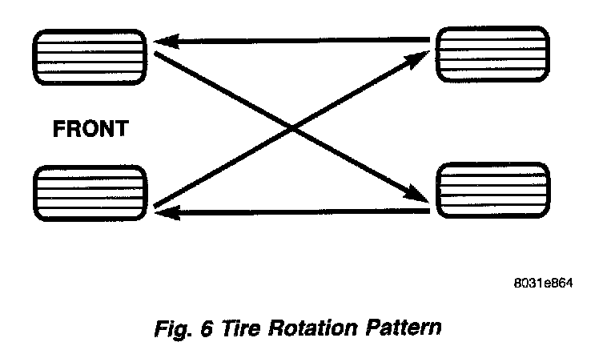

Rotation
Fig. 6:

Tires on the front and rear axles operate at different loads and perform different steering, driving, and braking functions. For these reasons:
- They wear at unequal rates
- Tend to develop irregular wear patterns
These effects can be reduced by timely rotation of tires. The benefits of rotation are especially worthwhile. Rotation will:
- Increase tread life
- Help to maintain mud, snow, and wet traction levels
- Contribute to a smooth, quiet ride
NOTE: The suggested method of tire rotation is illustrated. Other rotation methods can be used, but they will not provide all the tire longevity benefits.